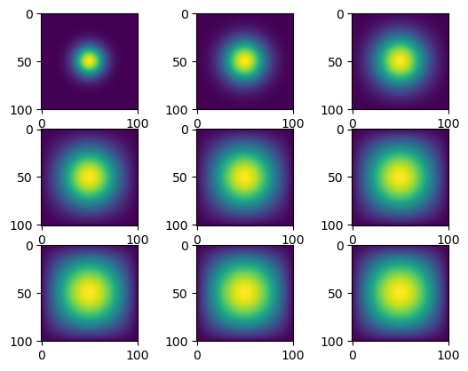

import numpy as np
from matplotlib import pyplot as plt
import timeit
import jax
from jax.experimental import sparse
from jax import jit
import jax.numpy as jnpIn this blog, I will be going over how to simulate two-dimensional heat diffusion in various ways.
We will use the equation below to simulate two-dimensional heat diffusion as a sequence of matrix-vector multiplications.
For this specific example, we will be setting N = 101 and epilson = 0.2
To begin, let’s import all the necessary libraries.
Matrix Multiplication
First, let’s try to create this simulation using matrix multiplication.
from heat_equation import advance_time_matvecmul
import inspect
print(inspect.getsource(advance_time_matvecmul))def advance_time_matvecmul(A, u, epsilon):
"""Advances the simulation by one timestep, via matrix-vector multiplication
Args:
A: The 2d finite difference matrix, N^2 x N^2.
u: N x N grid state at timestep k.
epsilon: stability constant.
Returns:
N x N Grid state at timestep k+1.
"""
N = u.shape[0]
u = u + epsilon * (A @ u.flatten()).reshape((N, N))
return u
The purpose of the function is to return the updated matrix after one timestep. We will later use this function to iterate through 2700 times to observe the heat diffusion.
Next, let us create a function called get_A(N).
from heat_equation import get_A
import inspect
print(inspect.getsource(get_A))def get_A(N) :
"""
Takes in the dimensions, N
Creates the corresponding matrix
"""
n = N * N
diagonals = [-4 * np.ones(n), np.ones(n-1), np.ones(n-1), np.ones(n-N), np.ones(n-N)]
diagonals[1][(N-1)::N] = 0
diagonals[2][(N-1)::N] = 0
A = np.diag(diagonals[0]) + np.diag(diagonals[1], 1) + np.diag(diagonals[2], -1) + np.diag(diagonals[3], N) + np.diag(diagonals[4], -N)
return A
This function will take in the dimensions we have preset, which is 101 and generate a matrix without all-zero rows or all-zero columns.
Now, let us use the two functions we have defined above to create a simulation of the heat diffusion after 2700 iterations. Let’s also output the heat diffusion after ever 300 iterations. Therefore, we should create an empty list to store NxN grid state. Since we will be creating this simulation in various ways, we should also calculate the amount of time it takes for this simulation to run. In the end, we will compare and see which method takes the least amount of time!
N = 101 # dimension
epsilon = 0.2
plots = [] # empty list
matrix = get_A(N) # getting inital array
u = np.zeros((N, N)) # defining u to be passed through advance_time_matvecmul
u[int(N/2), int(N/2)] = 1.0
start = timeit.default_timer() # getting the start time
for i in range(1, 2701) : # iterating through 2700 times
u = advance_time_matvecmul(matrix, u, epsilon)
if i % 300 == 0 : # after every 300th iteration, save the NxN grid state
plots.append(u)
stop = timeit.default_timer() # getting the end time
execution_time = stop - start # calculating the time it took to run
print("Time elapsed:", execution_time)Time elapsed: 21.823670458048582To observe our plots, we can run the for loop below to visualize the heat diffusion.
for i in range(len(plots)) :
plt.subplot(3, 3, i+1)
plt.imshow(plots[i])
We can see from our results that this methodology took a very long time to run. Therefore, it might not be the most efficient method. Let’s see if there is another way to perform the same simulation.
Sparse matrix in JAX
Let’s use the data structure that exploits a lot of zeros in the matrix A, which utiliziees the sparse matrix data structures. In addition, the JAX package holds an experimental sparse matrix support through utilizing jnp.
We can use the same function advance_time_matvecmul to get the NxN grid state. However, let’s use a different method to create the matrix. We will define a function called get_sparse_A.
from heat_equation import get_sparse_A
print(inspect.getsource(get_sparse_A))def get_A(N) :
"""
Takes in the dimensions, N
Creates the corresponding matrix
"""
n = N * N
diagonals = [-4 * np.ones(n), np.ones(n-1), np.ones(n-1), np.ones(n-N), np.ones(n-N)]
diagonals[1][(N-1)::N] = 0
diagonals[2][(N-1)::N] = 0
A = np.diag(diagonals[0]) + np.diag(diagonals[1], 1) + np.diag(diagonals[2], -1) + np.diag(diagonals[3], N) + np.diag(diagonals[4], -N)
return A
In this function, we are still using the get_A to generate our inital matrix. However, the JAX library is only able to read in jnp array’s and not np array’s. Therefore, we will need to convert the array into jnp format. The sparse.BCOO.fromdense function is a batched coordinate sparse array, which offers a compressed storage format. This will allow our code to run a lot faster and be more efficient. In addition, we want to make sure we use the jited version of advance_time_matvecmul as this allows jax to perform an optimized calculation.
N = 101 # dimension
epsilon = 0.2
u = np.zeros((N, N)) # reseting u
u[int(N/2), int(N/2)] = 1.0
plots = [] # list to insert NxN grid state
jitted = jax.jit(advance_time_matvecmul) #
matrix = get_sparse_A(N) # getting the matrix using the new function we defined
start = timeit.default_timer() # getting start time
for i in range(1, 2701) : # looping through 2700 iterations
u = jitted(matrix, u, epsilon) # using jitted function
if i % 300 == 0 : # getting every 300th iteration
plots.append(u) # adding to the list
stop = timeit.default_timer() # getting stop time
execution_time = stop - start # calculating the duration
print("Time elapsed:", execution_time)Time elapsed: 0.8979862499982119We can see that using the sparse matrix in JAX, the heat diffusion simulation was a lot faster than our previous method. It was about 10x faster. Let’s take a look at the plots and see if we got the same result.
for i in range(len(plots)) :
plt.subplot(3, 3, i+1)
plt.imshow(plots[i])
Direct Operation with Numpy
In this example, we will be using numpy to advance the solution by one timestep. We will be using vectorized array operation, like np.roll().
from heat_equation import advance_time_numpy
print(inspect.getsource(advance_time_numpy))def get_sparse_A(N) :
"""
Takes in the dimensions, N
Utilizies previously defined function and changing it to a jnp array
Puts the array into a sparse array
"""
A = get_A(N)
j_array = jnp.array(A)
A_sp_matrix = sparse.BCOO.fromdense(j_array)
return A_sp_matrix
We will now use our new function for the simulation.
epsilon = 0.2
plots = []
u = np.zeros((N, N))
u[int(N/2), int(N/2)] = 1.0
start = timeit.default_timer()
for i in range(1, 2701) :
u = advance_time_numpy(u, epsilon)
if i % 300 == 0 :
plots.append(u)
stop = timeit.default_timer()
execution_time = stop - start
print("Time elapsed:", execution_time)Time elapsed: 0.2789691670332104Wow! We can see that numpy runs abour 100x times faster than our first method! Let’s view our plots for the simulation.
for i in range(len(plots)) :
plt.subplot(3, 3, i+1)
plt.imshow(plots[i])
With JAX
Similarly to the numpy function above, we will instead be using jnp instead of np.
from heat_equation import advance_time_jax
print(inspect.getsource(advance_time_jax))def advance_time_numpy(u, epsilon) :
"""
Takes in the NxN grid state and episilon
Using the heat diffusion equation
Using np.roll to generate the boundary condition
Returns the new grid state after advancing by one timestep
"""
padded = np.pad(u, 1, mode = 'constant') # modifies array by padding edges
np_u = padded + epsilon * (np.roll(padded, 1, axis = 1) +
np.roll(padded, -1, axis = 1) +
np.roll(padded, -1, axis = 0) +
np.roll(padded, 1, axis = 0) -
(4 * padded))
np_u_slc = np_u[1:-1, 1:-1]
return np_u_slc
You can observe from about that in every instance that we used np, we switched it into jnp as jax only runs with jnp arrays. Now, let’s fun our function!
epsilon = 0.2
plots = []
u = np.zeros((N, N))
u[int(N/2), int(N/2)] = 1.0
jitted_jax = jax.jit(advance_time_jax) # remember to jit!
start = timeit.default_timer()
for i in range(1, 2701) :
u = jitted_jax(u, epsilon)
if i % 300 == 0 :
plots.append(u)
stop = timeit.default_timer()
execution_time = stop - start
print("Time elapsed:", execution_time)Time elapsed: 0.09186283400049433We have to remember to jit our function as well similar to what we did in part 2. Looking at our execution time, we can see that the JAX method performed the fastest out of all the methods!
Comparison
Out of all of the methods, the slowest was generating our own functions. This does not utilize a lot of efficient libraries that can help speed up the run time of our simulation. It took about 21.8 seconds to run through 2700 simulations. We can see that if we use the same approach while using JAX, it helps to speed the process up to around 0.89 seconds. Just simply using the JAX library with our own defined function was able to speed the simulation up by 20x. Next, we also recreated our inital function of advancing the simulation by one timestep through using the np.roll method. This significantly sped up the processes without the need to use JAX. In fact, it out performed the first and second method with a run time of 0.28 seconds. Impressive right?! Next, let’s see how our newly created function would work if we used the JAX library. We see that using the JAX library on our numpy function, our simulation ran in 0.092 seconds. Through comparing all of these simulations, we see that using the JAX library can significantly optimize and decrease our run time. Though it might be a little hard to understand what each function does in the JAX library, once you understand it, it makes coding the heat diffusion simulation a lot simplier. In addition, understanding the math behind the function will also help a lot. If you are proficient in these topics, creating the heat simulation with JAX is a lot simplier than using matrix multiplication and numpy.
Final Takeaways
Through creating the heat diffusion simulation in various ways, we see that using the JAX library is extremely helpful and runs really quickly. Therefore, it is more common to use JAX over numpy especially when working with very large amounts of data!